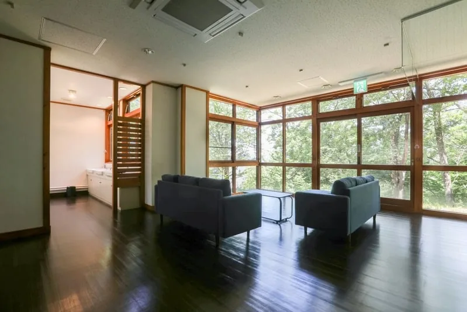

Around 15:00
Unlock the cottage,and begin your stay.
Check in with a digital key. Drop your bags and relax in the living room. Decide the day's plans together.
We will send your entry code after booking. Please check your plan for the check-in time.
FOLLOW SORABE
See SORABE today.
See seasonal views and the cottage on our official Instagram. We will share X and TikTok accounts once confirmed.
Instagram @sorabe_shimane ↗